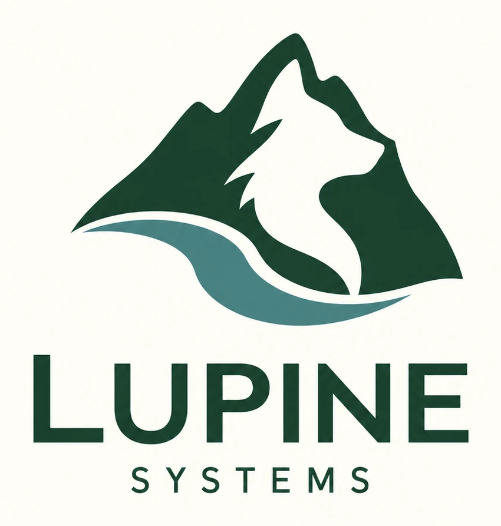

Learning and building toward energy infrastructure, starting in Tasmania.
Lupine is the project through which Chris Gogoi, an industrial and production engineer in Hobart, is building the electrical, computing and software foundations to understand, design and troubleshoot energy infrastructure, and to find a problem worth building a company around.
The product is not chosen yet. It has to come from evidence: what engineers actually need, what existing solutions miss, and what experiments show.

How the work is organised
Three connected activities
Every lesson, experiment and conversation is written down, so the reasoning can be checked later.
Understanding
Lessons in electrical fundamentals, measurement, control and communications, recorded in a handbook that keeps Chris's own explanations apart from the teaching.
The handbook →Experiments
Safe, low-voltage and reproducible. The prediction is written before measuring, and raw data is kept unedited in one place.
Experiment records →Product discovery
Sourced reading and conversations with engineers about what fails today, published only with their consent.
Research notes →Honest status · 16 October 2026
What exists, and what doesn't yet
Each claim carries a label saying how we know it.
| Capability | Status | Evidence |
|---|---|---|
| Rail: telling a confirmed outcome from an uncertain one, reconciling, refusing unsafe retries | SIMULATED | 35 automated tests, and a demo against a pretend battery controller |
| Cloked: evidence chain | SIMULATED partial | Proves records are consistent with each other; external anchoring not built |
| Any physical measurement or real device | NONE YET | Hardware waits until the fundamentals are in place |
| Rail controlling a real low-voltage device | PROPOSED | Target: January–March 2027 |
| Communication-loss and restart experiments on hardware | PROPOSED | Target: April–June 2027 |
Nothing on this site has been physically tested yet.
What the software does today
Only claim what the evidence supports
When Rail sends an instruction (say, a battery setpoint) and the line goes quiet, three different things look identical: it never arrived, it was refused, or it worked and the reply was lost. Rail is not allowed to guess.
| Verdict | What Rail needs to say it |
|---|---|
| completed | The other side accepted it and a fresh reading shows the effect, within tolerance |
| failed | The other side refused it, or guarantees it can never run, and no reading shows the effect anyway. “No record of it” alone is not enough |
| mismatched | Accepted, but a fresh reading disagrees. Not a success. |
| uncertain | Anything else. A missing reading is never zero, and old readings don't count. |
While an outcome is uncertain, Rail won't send the instruction again; the first may already have taken effect. Only fresh evidence, gathered by reconciling, can resolve it.
Code: src/rail_lite/outcome.py
· Every limitation: architecture guide
Timeline
Dates are targets; evidence decides
Each stage moves on only when its evidence exists.
| Period | Focus | Evidence to move on |
|---|---|---|
| Oct–Dec 2026 | Electrical fundamentals, measurement, basic programming; Tasmania's energy and data-centre systems | Explain voltage, current, power and energy; explain a control loop; tell an acknowledgement from an observed result |
| Jan–Mar 2027 | One safe, low-voltage instrumented device, connected progressively to Lupine | Repeatable measurements, documented limits, a command–acknowledgement–response demonstration |
| Apr–Jun 2027 | Communication loss, stale readings, restart and reconciliation on the prototype | Recorded failure experiments; the important code explained and modified unaided |
| Jul–Dec 2027 | Choose one narrow energy-infrastructure problem, informed by engineers and existing solutions | A specific user, a recurring problem, current approaches, a measurable improvement worth testing |
| 2028 | A supervised external trial with an engineering partner | Results against a meaningful baseline, with limits and responsibilities defined |
| 2029 onward | A commercial product, if trials and customer commitment support it | Users benefit, someone will pay, and it can be delivered and supported responsibly |
Historical · April–October 2026
Earlier work: payments
Lupine began as a decision engine for cross-border payments (AUD → SGD). That work is preserved here as it was. Its provider figures are ASSUMED constants, unverified (provenance), and none of it is evidence for the energy direction.
- Payments dashboardLive FX, 21 modelled rails, watcher, backtest
- Essay: Deterministic ValueChapters I, II and III
- Animated lessons 1–5Cross-border payments, from correspondent banking to route scoring
- CairnTraining console, 38 stations
- Aiva route scoringOne-slide explainer